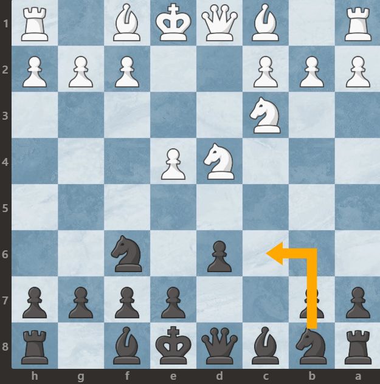

Obrona sycylijska Wariant klasyczny
Wariant klasyczny w obronie sycylijskiej, nazywany również klasyczną obroną sycylijską, jest jednym z najstarszych i najbardziej klasycznych sposobów na rozpoczęcie gry sycylijskiej. Charakteryzuje się następującymi posunięciami:
- e4, c5
- Sf3, d6
- d4, cd4
- Sxd4, Sf6
- Sc3, Sc6
Główne cechy wariantu klasycznego to:
Rozwinięcie figur: Obie strony dążą do rozwinięcia swoich figur i uzyskania kontroli nad centrum planszy. Białe zazwyczaj starają się rozwijać się szybko, kontynuując posunięciem 3.d4, podczas gdy czarne mogą wybrać różne strategie rozwijania swoich figur, w zależności od preferencji.
Walka o centrum: Kontrola nad centralnymi polami planszy pozostaje kluczowa. Obie strony mogą prowadzić walkę o centrum, starając się umieścić swoje figury na optymalnych pozycjach i wykorzystać centrum do atakowania przeciwnika.
Kreowanie planu: Wariant klasyczny daje obu stronom elastyczność w kreowaniu swoich planów gry. Białe mogą dążyć do rozwinięcia swoich figur i wykorzystania otwarcia centrum, podczas gdy czarne mogą odpowiedzieć na to na wiele różnych sposobów, starając się zbudować solidną pozycję na planszy.
Umiejętność adaptacji: Kluczową umiejętnością w wariancie klasycznym jest umiejętność adaptacji do zmieniającej się pozycji na planszy. Obie strony muszą być gotowe na różne scenariusze i być elastycznymi w swoich planach gry.
Wariant klasyczny w obronie sycylijskiej jest solidnym i elastycznym otwarciem, które nadal jest popularne na wszystkich poziomach gry. Zapewnia on szeroki wachlarz możliwości dla obu stron i może prowadzić do różnorodnych typów pozycji na planszy.
